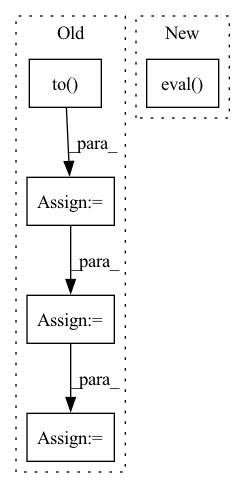

Pattern ID :7016
Before Change
print(message_output)
batch_result_list, batch_size_list = [], []
for batch_idx, interaction in enumerate(test_data):
users = interaction["user_id"].to( self.device)
items = interaction["item_id"].to(self.device)
scores = self.model.predict(users, items)
batch_size = users.size()[0]
users = users.cpu().numpy()
items = items.cpu().numpy()
scores = scores.detach().cpu().numpy()
batch_result = self.evaluator.evaluate([users, items, scores], test_data)
batch_result_list.append(batch_result)
batch_size_list.append(batch_size)
test_result = self.evaluator.collect(batch_result_list, batch_size_list)
After Change
self.model.load_state_dict(checkpoint["state_dict"])
message_output = "Loading model structure and parameters from {}".format(checkpoint_file)
print(message_output)
self.model.eval()
test_result = self.evaluate(test_data)
return test_result
In pattern: SUPERPATTERN
Frequency: 4
Non-data size: 5
Instances Fragment ID: 23381092
Project Name: rucaibox/recbole
Commit Name: 5cdb3f2f291c452e0242da319cebf5bb84f1d30e
Time: 2020-06-29
Author: 2015201909@ruc.edu.cn
File Name: trainer/trainer.py
M Class Name: Trainer
N Class Name: Trainer
M Method Name: test(3)
N Method Name: test(3)
M Parent Class: object
N Parent Class: object
M File Name: trainer/trainer.py
N File Name: trainer/trainer.py
M Start Line: 147
M End Line: 159
N Start Line: 163
N End Line: 164
Before Change
if i >= 10: break
frames = frames.to( DEVICE) // [1, T, 3, h, w]
frames_vis = postprocess_img(frames.squeeze(dim=0)) // [T, 3, h, w]
input = frames[:, :VIDEO_IN_LENGTH] // [1, t, 3, h, w]
pred_rgb = pred_rgb_model.pred_n(input, pred_length=VIDEO_PRED_LENGTH) // [1, T, 3, h, w]
pred_rgb_vis = postprocess_img(pred_rgb) // [T, 3, h, w]
pred_rgb = torch.cat([input, pred_rgb], dim=1)
pred_rgb = torch.stack([seg_model(pred_rgb[:, i]) for i in range(pred_rgb.shape[1])], dim=1)
pred_rgb = pred_rgb.argmax(dim=2).squeeze() // [T, h, w]
pred_then_colorized_vis = colorize_semseg(postprocess_mask(pred_rgb), num_classes=SYNPICK_CLASSES) // [T, 3, h, w]
frames_seg = [seg_model(frames[:, i]).argmax(dim=1) for i in range(frames.shape[1])]
frames_seg = torch.stack(frames_seg, dim=1) // [1, 1, h, w]
input_seg = frames_seg[:, :VIDEO_IN_LENGTH] // [1, t, 1, h, w]
pred_mask = pred_mask_model.pred_n(input_seg, pred_length=VIDEO_PRED_LENGTH)
pred_mask = pred_mask.argmax(dim=2) // [1, T, 1, h, w]
pred_mask = postprocess_mask(torch.cat([input_seg, pred_mask], dim=1).squeeze()) // [T, h, w]
pred_mask_vis = colorize_semseg(pred_mask, num_classes=SYNPICK_CLASSES) // [T, 3, h, w]
frames_colorized = colorize_semseg(postprocess_mask(frames_seg.squeeze()), num_classes=SYNPICK_CLASSES).unsqueeze(dim=0) // [1, T, 3, h, w]
frames_colorized_vis = postprocess_img(frames_colorized.squeeze(dim=0)) // [T, 3, h, w]
input_colorized = frames_colorized[:VIDEO_IN_LENGTH]
colorized_then_pred = pred_colorized_mask_model.pred_n(input_colorized, pred_length=VIDEO_PRED_LENGTH)After Change
seg_model.eval()
pred_rgb_model.eval()
pred_mask_model.eval()
pred_colorized_mask_model.eval()
// DATASET
data_dir = os.path.join(cfg.data_dir, "test", "rgb")
test_data = SynpickVideoDataset(data_dir=data_dir, vid_type=("rgb", 3), num_frames=VIDEO_TOT_LENGTH, Fragment ID: 23381223
Project Name: ais-bonn/vp-suite
Commit Name: 13016d4ab8ba4f8e7ee087155a6c5171f4d00ba3
Time: 2021-08-02
Author: boltres@ais.uni-bonn.de
File Name: scripts/visualize_4_way.py
M Class Name: AnonimousClass
N Class Name: AnonimousClass
M Method Name: visualize_4_way(1)
N Method Name: visualize_4_way(1)
M Parent Class:
N Parent Class:
M File Name: scripts/visualize_4_way.py
N File Name: scripts/visualize_4_way.py
M Start Line: 16
M End Line: 73
N Start Line: 17
N End Line: 74
Before Change
for epoch in range(1, num_epochs + 1):
loss_avg = 0
for i, (inputs, labels) in enumerate(tqdm(train_loader, leave=False), start=1):
inputs = inputs.to( device)
labels = labels.to(device)
outputs = model(inputs)
loss = criterion(outputs, labels)
optimizer.zero_grad()
loss.backward()
optimizer.step()
loss_avg += loss.item()
if verbose and i % 100 == 0:
tqdm.write(
f"Epoch [{epoch}/{num_epochs}], "After Change
model.train()
train_loss = run_epoch(model, train_loader, device, criterion, optimizer)
train_loss_history.append(train_loss)
model.eval()
with torch.no_grad():
val_loss = run_epoch(model, val_loader, device, criterion)
val_loss_history.append(val_loss)
if verbose: Fragment ID: 23381031
Project Name: jaketae/deep-malware-detection
Commit Name: 745a3e07407c7a3bac0f9828d6c42101d998c3c6
Time: 2020-11-23
Author: jaesungtae@gmail.com
File Name: train.py
M Class Name: AnonimousClass
N Class Name: AnonimousClass
M Method Name: train(9)
N Method Name: train(8)
M Parent Class:
N Parent Class:
M File Name: train.py
N File Name: train.py
M Start Line: 20
M End Line: 53
N Start Line: 16
N End Line: 46
Before Change
Tensor: Output tensor (T ** prod(upsample_scales), out_channels).
if not isinstance(c, torch.Tensor):
c = torch.tensor(c, dtype=torch.float).to( next(self.parameters()).device)
c = self.melgan(c.transpose(1, 0).unsqueeze(0))
if self.pqmf is not None:
c = self.pqmf.synthesis(c)
return c.squeeze(0).transpose(1, 0)
After Change
Perform inference.
self.melgan.eval()
return self.melgan(melspec)
Fragment ID: 23381084
Project Name: digitalphonetics/ims-toucan
Commit Name: b43437ffd52b1d82638a75e3648c752f2492652c
Time: 2021-02-19
Author: florian.lux@ims.uni-stuttgart.de
File Name: MelGAN/MelGANGenerator.py
M Class Name: MelGANGenerator
N Class Name: MelGANGenerator
M Method Name: inference(2)
N Method Name: inference(2)
M Parent Class: torch.nn.Module
N Parent Class: torch.nn.Module
M File Name: MelGAN/MelGANGenerator.py
N File Name: MelGAN/MelGANGenerator.py
M Start Line: 165
M End Line: 170
N Start Line: 158
N End Line: 159